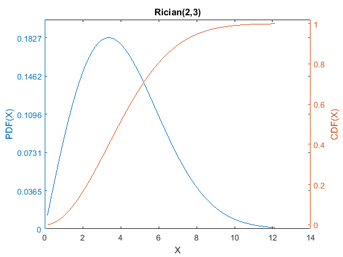
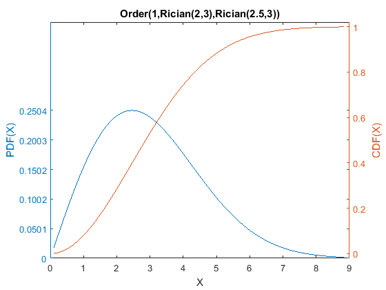

Using native MATLAB probability distribution objects within Cupid
This demo illustrates how to use native MATLAB probability distribution objects within Cupid. In this demo file, the m* objects are MATLAB probability distributions, and the c* objects are Cupid distributions.
Contents
Example: Rician distribution
Set up and use the Rician distribution as an example:
First, create a MATLAB probability distribution object. The Rician parameters s & sigma are positive reals.
mRician = makedist('Rician','s',2,'sigma',3);
Create a new Cupid distribution based on the MATLAB Rician. 'rr' indicates that both parameters are real numbers, The lower bounds for the parameters are [0 0], and the upper bounds for the parameters are [+inf +inf]
cRician = dMATLABc(mRician,'rr',[0 0],[+inf +inf]);
That's it. Now you can use any of Cupid's commands with this Rician distribution. For example:
cRician.PlotDens; [cRician.Mean, cRician.Variance]
ans =
4.1665 4.6401
 You can even use Cupid's facilities to adjust the parameters of the Rician, here for example to give a desired mean and variance of 5. There are a lot of warnings that NCX2INV does not converge, however. Let's turn these off to avoid clutter.
warning('off','stats:ncx2inv:NotConverge'); warning('off','stats:ncx2inv:LastStep'); cRician.EstMom([5 5]) [cRician.Mean, cRician.Variance]
The last step was: -0.00005363The last step was: -0.00002575The last step was: -0.00002713The last step was: 0.00002715The last step was: -0.00002706The last step was: 0.00002705The last step was: 0.00002705The last step was: -0.00002705The last step was: 0.00002705The last step was: 0.00005410The last step was: 0.00002705The last step was: -0.00002705The last step was: -0.00005410The last step was: 0.00002705The last step was: -0.00002705The last step was: -0.00002705The last step was: 0.00002705The last step was: -0.00002705The last step was: 0.00005411The last step was: -0.00002705The last step was: 0.00005410The last step was: -0.00005410The last step was: -0.00002705The last step was: 0.00005410The last step was: 0.00002705The last step was: -0.00005410The last step was: -0.00002705The last step was: 0.00005410The last step was: -0.00005410The last step was: 0.00005410The last step was: -0.00002705The last step was: -0.00002705The last step was: 0.00005410The last step was: -0.00002705The last step was: -0.00005410The last step was: -0.00002705The last step was: 0.00005410The last step was: 0.00002705The last step was: -0.00002705The last step was: 0.00002705The last step was: -0.00002705The last step was: 0.00002705The last step was: 0.00002705ans =
Rician(4.0969,2.5705)
ans =
5 5
Example: A convolution of two Ricians
Since cRician is a Cupid distribution, it can be used with any of the transformed or derived distributions in Cupid. This example shows how to form the sum of two Ricians:
cConv = Convolution(cRician,cRician); [cConv.Mean, cConv.Variance]
ans =
10 10
Note that this convolution has two copies of the same distribution object so they will necessarily always have same parameter values (even if parameters are adjusted). To avoid that, make separate cRician1 and cRician2 objects.
Adjust the parameters so that the convolution has a mean and variance of 11
cConv.EstMom([11 11],'ffrr')
The last step was: 0.00002705The last step was: 0.00002705The last step was: 0.00002705The last step was: -0.00005515The last step was: 0.00002705The last step was: 0.00002705The last step was: 0.00002705The last step was: 0.00002705The last step was: 0.00002705The last step was: 0.00002705The last step was: -0.00002771The last step was: 0.00002705The last step was: 0.00002705The last step was: 0.00002705The last step was: 0.00002705The last step was: 0.00002705The last step was: 0.00002754The last step was: 0.00002705The last step was: 0.00002705The last step was: 0.00002705The last step was: 0.00002705The last step was: 0.00002705The last step was: 0.00002768The last step was: 0.00002705The last step was: 0.00005531The last step was: 0.00002705The last step was: 0.00002705The last step was: 0.00002705The last step was: 0.00002705The last step was: 0.00002705The last step was: 0.00002705The last step was: 0.00002705The last step was: 0.00002705The last step was: 0.00002705The last step was: -0.00005547The last step was: 0.00002705The last step was: 0.00002705The last step was: 0.00002705The last step was: 0.00002705The last step was: 0.00002705The last step was: 0.00002705The last step was: 0.00002705The last step was: 0.00002705The last step was: 0.00002705The last step was: 0.00002705The last step was: 0.00002705The last step was: 0.00002705The last step was: -0.00005533The last step was: 0.00002705The last step was: 0.00002705The last step was: 0.00002705The last step was: -0.00005533The last step was: 0.00002705The last step was: 0.00002705The last step was: 0.00002705The last step was: 0.00002705The last step was: 0.00002705The last step was: 0.00002705The last step was: 0.00002705The last step was: 0.00002705The last step was: 0.00002705The last step was: -0.00005533The last step was: 0.00002705The last step was: 0.00002705The last step was: -0.00008298The last step was: 0.00002705The last step was: -0.00011065The last step was: 0.00002705The last step was: 0.00002705The last step was: 0.00002705The last step was: 0.00002705The last step was: 0.00002766The last step was: 0.00002705The last step was: 0.00002705The last step was: 0.00002705The last step was: 0.00002705The last step was: 0.00002705The last step was: 0.00002766The last step was: 0.00002705The last step was: 0.00002705The last step was: 0.00002705The last step was: 0.00002766The last step was: 0.00002705The last step was: 0.00002705The last step was: 0.00002705The last step was: 0.00002705The last step was: 0.00002705The last step was: 0.00002705The last step was: 0.00002705The last step was: -0.00000692The last step was: 0.00002705The last step was: 0.00002705The last step was: -0.00005533The last step was: 0.00002705The last step was: 0.00005533The last step was: 0.00002705The last step was: -0.00002766The last step was: 0.00002705The last step was: 0.00002705The last step was: 0.00002705The last step was: 0.00002705The last step was: 0.00002705The last step was: 0.00002705The last step was: -0.00002766The last step was: 0.00002705The last step was: -0.00005532The last step was: 0.00002705The last step was: 0.00002705The last step was: 0.00002766The last step was: 0.00002705The last step was: 0.00002705The last step was: -0.00002766The last step was: 0.00002705The last step was: 0.00002766The last step was: 0.00002705The last step was: 0.00002705The last step was: -0.00002766The last step was: 0.00002705The last step was: 0.00002766The last step was: 0.00002705The last step was: 0.00002705The last step was: 0.00002705The last step was: 0.00002705The last step was: 0.00002766The last step was: 0.00002705The last step was: 0.00005533The last step was: 0.00002705The last step was: 0.00002705The last step was: -0.00005532The last step was: 0.00002705The last step was: -0.00002766The last step was: 0.00002705The last step was: 0.00002705The last step was: 0.00002705The last step was: 0.00002705The last step was: 0.00002705The last step was: -0.00005533The last step was: 0.00002705The last step was: -0.00002766The last step was: 0.00002705The last step was: -0.00005533The last step was: 0.00002705The last step was: 0.00002705The last step was: 0.00002705The last step was: 0.00002705The last step was: 0.00002705The last step was: 0.00002705The last step was: -0.00002766The last step was: 0.00002705The last step was: -0.00002766The last step was: 0.00002705The last step was: 0.00002705The last step was: -0.00005532The last step was: 0.00002705The last step was: 0.00002705The last step was: 0.00002705The last step was: 0.00002705The last step was: -0.00002766The last step was: 0.00002705The last step was: 0.00002766The last step was: 0.00002705The last step was: 0.00002705The last step was: 0.00002705The last step was: 0.00002705The last step was: 0.00002705The last step was: 0.00002705The last step was: 0.00002705The last step was: 0.00002705The last step was: 0.00002705The last step was: 0.00005533The last step was: 0.00002705The last step was: 0.00002705The last step was: 0.00002705The last step was: 0.00002705The last step was: 0.00002705The last step was: 0.00002705The last step was: 0.00002705The last step was: 0.00002705The last step was: 0.00002705The last step was: 0.00002705The last step was: 0.00002705The last step was: 0.00002705The last step was: -0.00002766The last step was: 0.00002705The last step was: 0.00002705The last step was: 0.00002705The last step was: -0.00001383The last step was: 0.00002705The last step was: 0.00002705The last step was: 0.00002705The last step was: -0.00005532The last step was: 0.00002705The last step was: 0.00002705The last step was: 0.00002705The last step was: 0.00002705The last step was: 0.00005533The last step was: 0.00002705The last step was: 0.00002705The last step was: 0.00002766The last step was: 0.00002705The last step was: 0.00002705The last step was: 0.00002705The last step was: 0.00002705The last step was: -0.00002766The last step was: 0.00002705The last step was: -0.00002766The last step was: 0.00002705The last step was: 0.00002705The last step was: -0.00005533The last step was: 0.00002705The last step was: -0.00001383The last step was: 0.00002705The last step was: 0.00002766The last step was: 0.00002705The last step was: 0.00005533The last step was: 0.00002705The last step was: 0.00002705The last step was: 0.00002705The last step was: 0.00002705The last step was: -0.00005533The last step was: 0.00002705The last step was: 0.00002705The last step was: -0.00005532The last step was: 0.00002705The last step was: 0.00002705The last step was: 0.00002705The last step was: 0.00002705The last step was: 0.00002705The last step was: 0.00002766The last step was: 0.00002705The last step was: 0.00005533The last step was: 0.00002705The last step was: 0.00002705The last step was: 0.00002705The last step was: -0.00005532The last step was: 0.00002705The last step was: 0.00005533The last step was: 0.00002705The last step was: 0.00002705The last step was: 0.00002705The last step was: 0.00002705The last step was: 0.00002705The last step was: -0.00002766The last step was: 0.00002705The last step was: 0.00002766The last step was: 0.00002705The last step was: 0.00002705The last step was: 0.00002705The last step was: 0.00002705The last step was: 0.00002705The last step was: 0.00002705The last step was: 0.00002705The last step was: 0.00002705The last step was: -0.00005532The last step was: 0.00002705The last step was: 0.00002705The last step was: 0.00005533The last step was: 0.00002705The last step was: 0.00002705The last step was: -0.00002766The last step was: 0.00002705The last step was: -0.00002766ans = Convolution(Rician(4.6855,2.6265),Rician(4.6855,2.6265))
To save time, the 'ffrr' parameter tells Cupid not to adjust the parameters of the first distribution, since they are actually identical to the parameters of the second distribution (remember, it is all one distribution). Unfortunately, 'rrff' does not also work, because of how Cupid sets parameters.
[cConv.Mean, cConv.Variance] cConv.PlotDens
ans =
11 11

Example: The distribution of the minimum of two different Ricians
For simplicity, re-use the previous Rician, resetting its parameters to some arbitrary desired values.
cRician.ResetParms([2 3]);
Make a second Cupid Rician distribution so that it can have different parameter values than the original one.
mRician2 = makedist('Rician','s',2.5,'sigma',3); cRician2 = dMATLABc(mRician2,'rr',[0 0],[+inf +inf]); % s & sigma are positive reals.
Now create the distribution of the minimum (i.e., 1st order statistic) of these two Ricians:
cOrder = Order(1,cRician,cRician2); cOrder.PlotDens; cOrder.CDF([2 4])
ans =
0.28562 0.74341
 Even though its underlying distributions were derived from MATLAB distributions, all of the usual Cupid functions work with it. For example, next we adjust the parameters of the second Rician so that the distribution of the minimum has CDF(2)=.25 and CDF(4)=.75:
cOrder.EstPctile([2 4],[.25 .75],'fffrr') % fix the ith order parameter and the two parameter values of the first Rician cOrder.CDF([2 4])
The last step was: -0.00005196The last step was: -0.00005257The last step was: 0.00005341The last step was: -0.00011174The last step was: 0.00002982The last step was: -0.00005512The last step was: -0.00005481The last step was: 0.00002891The last step was: -0.00005674The last step was: -0.00002815The last step was: -0.00002813The last step was: 0.00005684The last step was: 0.00002829The last step was: 0.00002836The last step was: -0.00002836The last step was: -0.00002836The last step was: -0.00002836The last step was: -0.00002836The last step was: -0.00005672The last step was: 0.00008508The last step was: 0.00005672The last step was: 0.00005672The last step was: 0.00005672The last step was: 0.00002836The last step was: 0.00005672The last step was: 0.00005672The last step was: 0.00005672The last step was: -0.00005672The last step was: 0.00005672The last step was: 0.00008508The last step was: -0.00002836The last step was: 0.00005672The last step was: -0.00002836The last step was: -0.00005672The last step was: 0.00005672The last step was: -0.00005672The last step was: 0.00002836The last step was: -0.00002836The last step was: 0.00002836The last step was: -0.00005672The last step was: -0.00002836The last step was: 0.00005672The last step was: 0.00005672The last step was: 0.00005672The last step was: 0.00005672The last step was: 0.00002836The last step was: 0.00002836The last step was: -0.00005672The last step was: -0.00005672The last step was: 0.00002836The last step was: 0.00005672The last step was: -0.00002836The last step was: -0.00005672The last step was: 0.00002836The last step was: -0.00008508The last step was: -0.00005672The last step was: -0.00002836The last step was: -0.00005672The last step was: -0.00002836The last step was: -0.00005672The last step was: -0.00002836The last step was: 0.00005672The last step was: -0.00005672ans =
Order(1,Rician(2,3),Rician(3.6113,1.8049))
ans =
0.25 0.75